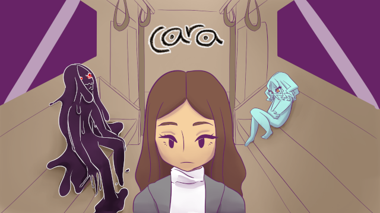

Cara Game

Cara is a game about a girl with a broken heart, and in order to become whole again, she must confront her inner demons and push herself to make her life better. It is a game that involves both narrative and platforming elements.
Created for Global Game Jam 2020 by:
- Casey Chen: Narrative and Game Designer
- Christian Albiar: Composer / SFX
- Gabbi Martinez: Character Artist
- Mike Henry: Level Designer / Programmer
- Trever Berryman: Game Design / Narrative Design